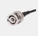
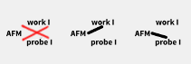

Main window
Main window
Software main window contains a few areas.- Falling menu.
- Toolbar.
- Sweep control panel.
- Current of time oscilloscope like plots.
- Status bar with instant current and voltage values.
Falling menu
There are a few sections in falling menu: "File", "Device", "Settings" and "Help".
- "File" menu allows a user to close software.
- Bipotentiostat control hardware attached to a computer appears as Virtual COM port. "Device" menu is dedicated to device selection. In case of a few devices attached or in case of a few serial ports onboard one may choose Virtual COM port which corresponds to the hardware attached.
- "Settings" menu contains two setup dialogs. One for device calibration and the other for remote control setup.
-
"Help" menu contains this help window as well as two more dialogs: "About" and "Firmware upgrade"
"About" dialog allows to obtain software and firmware versions.
"Firmware upgrade" item is needed to upgrade onboard firmware inside the control box.
Toolbar
Toolbar contains buttons for the following purposes.
These three arrows allows user to choose current of time oscilloscope period. Three buttons correspond to "slow", "medium" and "fast" sweeps.
This button engages chronoapmerometry function. In gives the user to choose meandge pulse's destination potential and duration.
 External triggering button. When in pressed state external triggering more is on. In this mode control box records data on rising edge of triggering signal.
 This buttons group allows user to choose AFM controller input. It can be set to either of current inputs of the control box or to not connected state.
 Stop button interrupts executed sweep or chronoamperometry procedure.
Stop button interrupts executed sweep or chronoamperometry procedure.
Sweep control panel
Sweep control panel is located on the left by default. Please, pay attention that control box
"Electrode 1" and "Electrode 2" groups have identical controls shich allow to setup potential sweep. These controls are the following.
- Voltage gain This control is supposed to be set to the same position as appropriate knob on bipotentiostat.
- Current gain Current gain is the same but to adjust current cain to match potentiostat's knob.
- Instant/Start pot Control defines the potential applied at the moment. Whenever a value is changed in this control box it is applied as soon as user presses "Enter" key or when control box looses focus.
- Vertex 1, vertex 2 pair define up to two intermediate points potential transits through during sweep. When sweep is looped potential is swept within these two values.
- End potential input defines the potential sweep stops at. When sweep reaches end potential "start" and "stop" values are flept to provide smooth backward transition.
-
Pull el 2 when sweep, pull el 1 when sweep check box defines if the other electrode should be involved into sweep. For example, if "electrode 1" is supposed to sweep and if "pull el 2 when sweep" control is checked then "electrode 2" will be swept in such a way that potential difference will remain constant.
Warning! According to your echeme this condition is satisfied automatically by hardware feedback. It seems that if this option is selected applied by control box potential difference will remain the same. But as for potentials in bipotentiostat it is not the case.
"Sweep setup" control group defines sweep cycles quantity, speed and recorded points quantity per one volt.